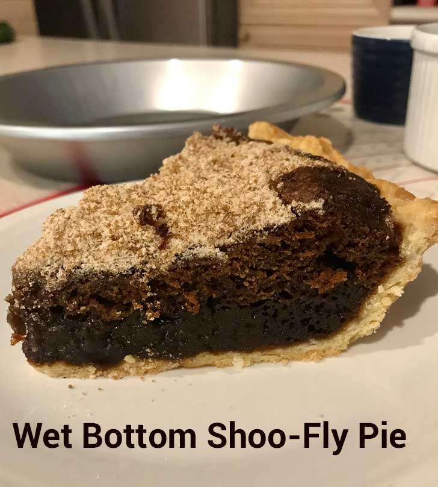
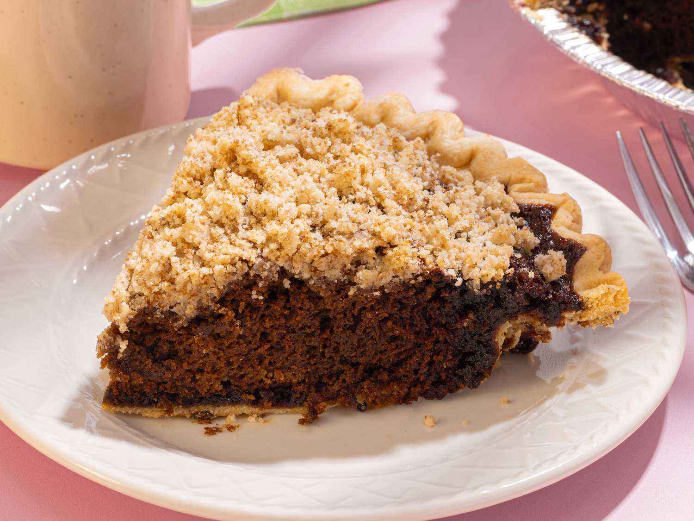

Find Shoofly
What is Shoofly Pie?
Shoofly pie is a sweet molasses crumb pie rooted in Pennsylvania Dutch heritage. It comes in wet and dry bottom variations and is beloved for its sticky sweetness and deep, molasses-rich flavor.
History of Shoofly Pie

The dessert dates back to the late 1800s, when it was often served for breakfast with coffee. Its name comes from the need to “shoo” flies away from its sweet filling. Today, shoofly pie is an icon of Pennsylvania Dutch Country.
Wet Bottom vs. Dry Bottom


Wet-bottom pies have a gooey molasses layer above the crust. Dry-bottom pies are more crumbly and cake-like. Both offer a rich taste of tradition.
About Find Shoofly
We collect and share places that serve this classic pie so lovers and the shoofly-curious can find a slice nearby. Our goal is to preserve and celebrate this regional favorite.